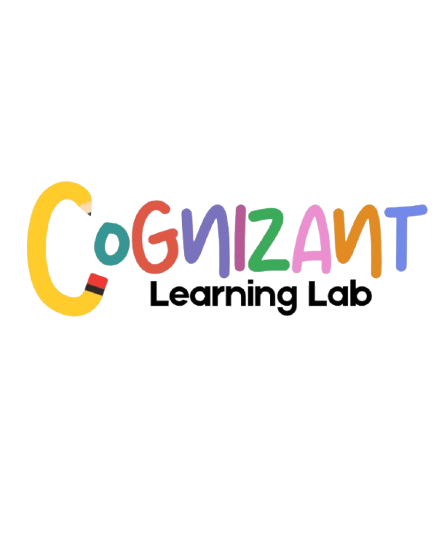

7–10 años
First Steps
Primeras palabras, sonidos y conversaciones a través de juegos, cuentos, canciones y movimiento.
- Vocabulario cotidiano
- Expresiones básicas
- Pronunciación divertida

★ Inglés para cada etapa
En Cognizant acompañamos a personas de todas las edades a descubrir el inglés con clases vivas, cercanas y pensadas para cada etapa.
Aprender, crecer, hablar.
Una experiencia que inspira confianza.
El tiempo depende de las horas de clase y práctica que elijas cada semana. Con constancia, es posible alcanzar avances notables; el avance también depende de tu nivel inicial y tus objetivos.
Un programa para cada etapa
Programas creados para conectar con la manera en que cada estudiante aprende, practica y se expresa.
7–10 años
Primeras palabras, sonidos y conversaciones a través de juegos, cuentos, canciones y movimiento.
11–15 años
El inglés se convierte en una herramienta para comunicarse, crear y explorar nuevas ideas.
16 años en adelante
Más seguridad para hablar, pensar y desenvolverse en inglés en escenarios reales.
Progreso que se entiende
Trabajamos con el Marco Común Europeo (CEFR) para que cada avance tenga una dirección clara.
Primer contacto con el idioma.
Se comunica en lo cotidiano.
Más independencia al hablar.
Fluidez en muchas situaciones.
Uso natural y avanzado.
Dominio amplio del inglés.
Tú eliges cómo aprender
Presencial
Un espacio cercano para practicar, crear y conectar con otros estudiantes.
Virtual
Clases en vivo, recursos digitales y una experiencia participativa desde donde estés.
¿Por qué Cognizant?
No enseñamos solo palabras: creamos experiencias que hacen que el inglés se sienta posible.
Contenido y acompañamiento según tu punto de partida.
Más oportunidades de participar y recibir apoyo.
Escuchar, hablar, leer y escribir en equilibrio.
Seguimiento claro que celebra cada avance.
Preguntas frecuentes
Resuelve tus dudas sobre las clases y encuentra tu punto de partida.
Tengo otra pregunta →Contamos con programas para 7–10 años, 11–15 años y 16 años en adelante. Te orientamos para encontrar la opción más adecuada.
Ofrecemos ambas modalidades. Puedes elegir la experiencia que funcione mejor para tu rutina.
No. Podemos orientarte desde el nivel inicial o ayudarte a continuar desde el punto en que te encuentres.
Con constancia, el progreso puede ser notable entre los 6 y 12 meses. El avance depende de las horas de clase y práctica semanal; cada estudiante sigue una ruta según su nivel inicial y sus objetivos.
Observamos participación, proyectos y habilidades comunicativas. Además, realizamos exámenes mensuales para medir el progreso de forma clara y útil.
¿Listo para comenzar?
Conversemos sobre el programa ideal para tu etapa, nivel y forma de aprender.
⌖ C. Diego Alvarado, Los Girasoles, Distrito Nacional